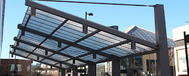

Semakin berkembangnya dunia pembangunan, maka hadir banyak material penambah yang melengkapi keindahan sebuah banguanan. Fungsi utama kaca merupakan sebagai pencahayaan natural dan juga sebagai komponen dari keindahan bangunan. Banyak macam dari kaca yang dapat di gunakan untuk banguan ataupun rumah tinggal.
Kini telah hadir berbagai maca jenis kaca yang dapat ditemui, tiap kaca mempunyai fungsinya masing-masing. Bisa untuk system keamanan, keindahan dan masih banyak yang dapat di temukan dari pemasangan kaca. Ragam kaca-kaca tersebut diantaranya merupakan kaca tempered, kanopi kaca, kaca frameless, kaca cermin, railing kaca dan masih banyak variasi kaca lainnya yang dapat anda dapatakan dan anda aplikasikan pada bangunan. Tak hanya material kaca sekarang juga terdapat material kayu atau parket lantai kayu jati.
Jasa Pemasangan Railing Kaca

railing kaca Ngawi kini kian banyak opsinya. Mungkin hal ini disebabkan kian banyak pemilik rumah yang berharap menunjukkan sebuah desain interior rumah yang benar-benar minimalis. Maka dari itu, komponen-bagian tangga tak lagi dihasilkan dengan bahan kayu. Malah aksesoris seperti pada pegangan tangga malah tidak terbuat dari bahan kayu lagi tapi kaca dan aluminum. Dalam hal kaca, Anda dapat memilih kaca tempered. Maka dari itu, para produsen berusaha untuk menjadikan railing yang terbuat dari kaca dengan figur yang berbeda-beda.
Ada banyak alternatif jenis kaca yang dapat diterapkan. Anda dapat memilih kaca tempered sebagai bahan utamanya. Railing ini dapat dibuat sebagai pembatas pada tangga dan juga sebagai pembatas pada balkon. Seandainya mendukung keamanan, railing kaca Ngawi ini juga akan mempercantik desain interior rumah Anda. Dengan demikian, pecahan tidak akan melukai siapa saja. Tak anda ketika ini sedang memerlukan railing kaca Ngawi untuk kantor, rumah dan tempat-daerah lainnya, anda bisa mengunjungi dis.or.id. Selain disana terdapat banyak tersedia pelbagai ukuran railing kaca Ngawi dengan desain yang anda inginkan. Kalau memberikan kesan minimalis pada interior rumah, ini juga membuat rumah Anda terlihat lebih nyaman untuk dihasilkan tempat tinggal.
ukuran dan ketebalan railing kaca Ngawi telah tersedia.
Info Pemesanan Selengkapnya
Google Maps: https://www.google.com/maps/d/viewer?mid=1W14inZYnfBEjAU3RL6mMdLOdyHyt3uKR&ll=-7.27380280025364%2C112.65243155000007&z=18
Note: https://www.facebook.com/notes/distributor-of-industrial-supply/kontraktor-jasa-pemasangan-railing-tangga-kaca/1785722898394256/
Event: https://www.facebook.com/events/1865522363760219/
Distributor, Supplier & Jasa Pasang Kanopi Kaca

Pintu Kaca Shower pada kamar mandi yakni salah satu opsi yang baik untuk desain interior kamar mandi modern. Anda bisa memilih kanopi kaca yang layak dengan kebutuhan dan kemauan anda. Atap kaca skylight ditujukkan untuk menerima sinar alami UV yang memiliki fungsi sebagai penerangan dalam sebuah ruang. Jadi sudah tidak heran lagi semua orang berkeinginan mencari harga yang sangat kompetitif untuk menyesuaikan budget atau anggaran mereka masing – masing untuk membikin produk canopy kaca. Jikalau tembus pandang, kaca menyerap cahaya yang masuk sehingga kian tebal kaca karenanya semakin sedikit sinar yang dapat melaluinya, maka sifat transparannya makin berkurang.|Di samping pintu kaca shower akan membuat kamar mandi kecil terlihat lebih besar. Atap akrilik atau bisa juga disebut atap kaca acrylic ini banyak ditemukan di sebuah bangunan rumah, seperti ruko, apartemen, kafe, mall, hingga bangunan gedung.
Kini anda bisa mendapatkan kanopi kaca dengan kualitas terbaik dan juga bermutu di dis.or.id. Ini terlihat dari bahan material yang di pakai dalam pembuatan kanopi kaca. Dis.or.id juga menyediakan jasa pemasangan kanopi kaca yang tentunya dengan bantuan energi professional yang telah berpengalaman. Banyak bangunan seperti gedung perkantoran, perumahan, ruko dan apartement yang menerapkan kanopi kaca tempered. Kalau fungsi utama kanopi sebagai pelindung untuk bangunan tersebut, pemasangan kanopi kaca juga bisa membuat bangunan menjadi kelihatan lebih indah dan menarik, apalagi mengaplikasikan konsep yang sama dengan konsep rumah minimalis. Setelah kaca untuk atap kanopi cukup digemari. Disana anda akan mendapat kanopi kaca yang pantas dengan beragam ketebalan dan harga yang cukup terjangkau.
Distributor & Supplier Kaca Shower

Anda pastinya meninginkan desain kamar mandi rumah layaknya kamar mandi hotel berbintang yang menggunakan kamar mandi duduk serta dilengkapi shower ataupun bath tub. Salah satu metode yang dapat diterapkan untuk mewujudkan kamar mandi yang senantiasa bersih yaitu menggunakan shower karena metode pembersihannya memang jauh lebih praktis dibanding dengan yang menggunakan konsep bak mandi. Tidak mau lebih sempurna lagi, kamar mandi yang menggunakan shower ini bisa dilengkapi dengan komponen lain yakni shower screen atau dapat disebut dengan kaca shower. Shower screen yaitu kotak atau alat yang berfungsi sebagai penyekat ruang khusus untuk kamar mandi. Ada sebagian alasan mengapa Pintu Kaca Shower banyak diaplikasikan salah satunya ialah kaca lebih terlihat bersih dan rapi dan juga lebih mudah dalam perawatannya. Di samping pintu kaca shower akan membikin kamar mandi kecil nampak lebih besar. Kita tak perlu repot lagi mencari tukang sendiri sebab pemasangan alat sekat ini memang memerlukan teknik tersendiri.
Tidak anda sedang mencari kaca shower untuk kamar mandi, anda dapat lantas mengunjungi dis.or.id. Anda dapat buktikan sendiri.
Distributor, Supplier & Jasa Pasang Kanopi Kaca

Seiring dengan perkembangan zaman di dunia properti, kini kanopi kaca telah berkembang kencang mencontoh arsitektur modern. Diantaraya merupakan kaca tempered 8 mm, kaca tempered 10 mm clear, kaca tempered 12 mm clear, kaca laminated 12 mm clear, kaca laminated 5 mm + 5 mm clear non tempered kaca, kaca laminated 5 mm + 5 mm tempered clear dan masih banyak lagi. Atap kaca skylight ditujukkan untuk mendapatkan cahaya natural UV yang memiliki fungsi sebagai penerangan dalam sebuah ruang. Apabila tembus pandang, kaca menyerap cahaya yang masuk sehingga semakin tebal kaca karenanya semakin sedikit sinar yang bisa melewatinya, maka sifat transparannya makin berkurang.|Di samping pintu kaca shower akan membuat kamar mandi kecil menonjol lebih besar. Atap akrilik atau dapat juga disebut atap kaca acrylic ini banyak ditemukan di sebuah bangunan rumah, seperti ruko, apartemen, kafe, mall, sampai bangunan gedung.
Tak anda beratensi untuk memasang kaca kanopi pada rumah, gedung ataupun kantor, anda dapat segera mengunjungi dis.or.id. Selain disana anda dapat mendapatkan penawaran mengenai jasa pemasanga kanopi kaca. Bila itu, kanopi juga bisa melindungi mobil dan kendaraan lain anda. Sesudah kaca untuk atap kanopi cukup digemari. Disana anda akan memperoleh kanopi kaca yang cocok dengan bermacam-macam ketebalan dan harga yang cukup terjangkau.
Jasa Maintenance Kaca

Jasa maintenance kaca menjadi solusi bagi Anda yang mempunyai gedung yang terbuat dari kaca. Salah satunya pelayanan berupa pembersihan gedung yang terbuat dari kaca. Tak kaca tak kusam, maka kaca patut dibersihkan secara regular. Dis.or.id mempunyai energi ahli yang dapat cakap membersihkan gedung pencakar langit yang bangunannya terbuat dari kaca. Sekiranya itu, mampu membersihkan bangunan kaca melengkung.
Dengan menggunakan bahan pembersih yang akan membuat kaca kelihatan bersih seperti pertama kali dipasang.
Dis.or.id memahami semakin banyak gedung pencakar langit dengan betuk yang berbeda-beda. Dengan energi pakar yang siap untuk melakukan pembersihan dan bahan pembersih yang di miliki, kaca gedung perkantoran Anda akan nampak seperti baru lagi. Dis.or.id memiliki semua kekuatan ahli yang di rekrut hanya mereka yang profesional yang tahu persis bagaimana cara menerapkan alat dan bagaimana membersihkan kaca gedung bertingkat. Selain hanya dalam hal membersihkan kaca, mereka juga kapabel mengerjakan pembetulan serta penggantian kaca yang mengalami kerusakan.
Jasa Pemasangan Kaca Tempered

Jasa pemasangan kaca tempered menawarkan solusi bagi Anda mempunyai budget yang terbatas namun mau mempunyai properti, entah itu gedung perkantoran, warung, atau rumah hunian yang menggunakan kaca tempered. Semakin banyak orang yang berkeinginan menggunakan kaca ini. Selain itu saja. Tetapi dulu cuma gedung perkantoran atau sentra perbelanjaan modern saja yang menerapkan variasi kaca ini, sekarang rumah hunian juga telah dibangun dengan kaca tempered.
Kalau itu, bermacam-macam bagian properti akan semakin menarik jikalau dihasilkan dari kaca tempered seperti kanopi, pintu, kamar mandi, dan balkon.
Banyak hal yang dapat dilakukakn kaca tempered ini salah satunya sebagai pembatas, untuk kamar mandi dan masih banyak lagi. Harga untuk tiap-tiap pemasangan dijamin termurah dan hasil cara kerja yang pantas dengan keinginan anda. Tak ketika ini anda sedang ingin membangun suatu bangunan atau gedung, anda dapat memanfaatkan kaca tempered untuk diaplikasikan seketika ke semua jenis bidang. Apabila aman kaca tempered juga mampu memberikan kesan keindahan yang benar-benar baik diperbandingkan dengan kata macam lainnya. Lebih dari itu, dis.or.id telah menyiapkan tenaga ahli yang siap untuk melaksanakan pemasangan, entah itu kaca tempered untuk kanopi, pintu, partisi, balkon, dan lain sebagainya.
Distributor & Supplier Pintu Kaca

Progres ini banyak model pintu seperti sesuai dengan ada di bayangan Anda. Anda dapat pilih desain seperti apa yang Anda sukai. Ada juga pintu kaca dengan frame dengan desain yang berbeda seperti folding dan sliding. Kekuatan ragam kaca yang bisa Anda pilih untuk pintu kaca Anda seperti kaca tempered yang sedang booming atau kaca non-tempered yang harganya lebih relatif murah. Anda dapat pilih bahan untuk frame yang Anda inginkan, apakah itu dijadikan dari aluminum atau dari kayu. Kini tidak kalah penting lagi yakni pemilihan kaca. Dalam hal ini, terdapat sebagian jenis kaca dengan kwalitas yang terbaik.
Dis.or.id menyediakan pintu kaca dengan bermacam-macam ragam yang bisa anda pilih pantas keperluan. Jikalau pakar yang sungguh-sungguh profesional sehingga sungguh-sungguh siap untuk mewujudkan pintu kaca seperti apa yang berharap Anda miliki.
Kaca yang di gunakan yaitu kaca dengan kwalitas terbaik. Anda bisa memilih kaca tempered yang kini ini sedang naik daun. Untuk budget yang lebih sedikit, Anda dapat memilih ragam kaca non-tempered.
Jual Kaca Cermin

Kaca cermin sekarang memiliki desain yang berbeda. Kaca cermin dilapisi dengan pelapis transparan tipis dan oksida logam sebagai lapisan pelapis. kaca cermin lazim digunakan pada bukaan pintu atau jendela dinding luar, yang nantinya diinginkan berpenampilan mewah pada bangunan. Untuk bangunan bertingakat, secara khusus digunakan pada macam dinding kaca. Kini, cermin tidak cuma berbentuk persegi atau persegi panjang saja. Jadi, cuma tampak transparan dari satu sisi saja. Bahkan juga komponen tepi. Artinya, Anda tidak dapat mengamati yang ada di dalam ruangan.
Dis.or.id yaitu penyedia bermacam ukuran kaca cermin yang bisa anda aplikasikan ke gedung, kantor maupun rumah anda. Artinya, cermin hal yang demikian tak memiliki frame atau bingkai. Atau Anda bisa buat pintu kaca cermin. Tersedia kaca cermin dengan pelbagai ukuran yang bisa anda pesan di dis.or.id. Dis.or.id menyediakan kaca cermin yang dapat anda beli dengan harga yang sangat murah dan dengan kualitas terbaik. Tidak anda tertarik untuk mempunyai kaca cermin bagus sebagai pemanis ruangan atau sebagai pintu, anda bisa lantas mengunjungi dis.or.id.
Distributor & Supplier Pintu Lipat Kaca

Pastinya anda sudah mengenal banyak kelebihan dari kaca tempered.Apabila ruang makan bersebelahan dengan taman, Anda dapat sekat dengan pintu lipat kaca ini. Macam kaca nomor 6 ini benar-benar direkomendasikan untuk dihasilkan sebagai bahan membikin pintu lipat kaca.
Muncul pertanyaan mengapa Harus menggunakan kaca tempered. Banyak pertimbangan yang membikin Anda pasti yakin untuk memilih kaca tempered daripada tipe kaca yang lainnya. Sekarang, banyak kantor yang tak lagi mempunyai ruangan yang disekat dengan tembok dan saat ini beralih dengan ruangan disekat dengan memakai kaca. Hinges yakni aksesoris yang penting karena hinges inilah yang menyangga berat pintu kaca Anda.
Jasa Pemasangan Kubikel Toilet
Dulu, kamar mandi cuma disekat oleh penyekat yang berbahan kayu, jarang sekali yang mengaplikasikan bahan lain. Kubikel kamar kecil yaitu kaca pembatas yang digunakan pada WC.
Jika anda berminta untuk membeli kubikel kaca, anda bisa mengunjungi dis.or.id. Dengan menerapkan kamar mandi kubikel pada hunian maupun gedung yang anda miliki tentunya banyak kelebihan yang anda daptkan yakni harga kubikel yang lebih murah dibandingi dengan bahan konvensionel lainnya. Kamar kubikel juga memberikan hal yang efisien dan tepat sasaran dalam pembagian space kamar mandi yang kecil.
Harga yang ditawarkan pun cukup terjangkau.
Justru embun bisa menempel di kaca dan lambat laun dapat membikin kaca tak sejernih semula. Apabila anda ketika ini sedang memerlukan kaca shower untuk kamar mandi, langsung saja kunjungi dis.or.id untuk melakukakn pengorderan maupun menanyakan detail harga dari kaca shower. Kaca shower yang di jual di jamin kaca shower yang memiliki kualitas terbaik dan bermutu tinggi.
Distributor & Supplier Partisi Kaca

Biaya ini tentu bukan tanpa alasan. Yang pertama, tarif pembuatan dan pemasangan partisi kaca jauh lebih murah dibandingkan dengan partisi yang terbuat dari batu bata. hanya rumah, perkantoran juga dibuat sedemikian rupa supaya terlihat amat minimalis dan menarik. Jadi, Anda akan sungguh-sungguh berhemat bila memilih untuk memasang partisi kaca ini. Anda mengaplikasikan partisi kaca ini sebagai penyekat ruangan seperti kamar mandi dalam, taman dalam ruangan, ruangan bermain di dalam rumah, dan lain sebagainya. , Anda wajib amati mutu kaca yang diaplikasikan. Bila anda kesusahan untuk memasang dinding kaca penyekat, dis.or.id menyediakan jasa pemasangan dinding kaca penyekat untuk kamar mandi rumah anda. Disana anda akan partisi kaca yang cocok dengan keinginan anda.